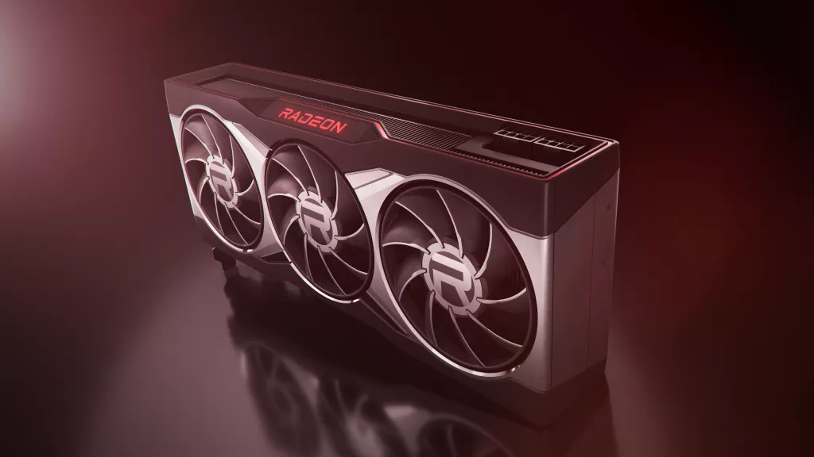
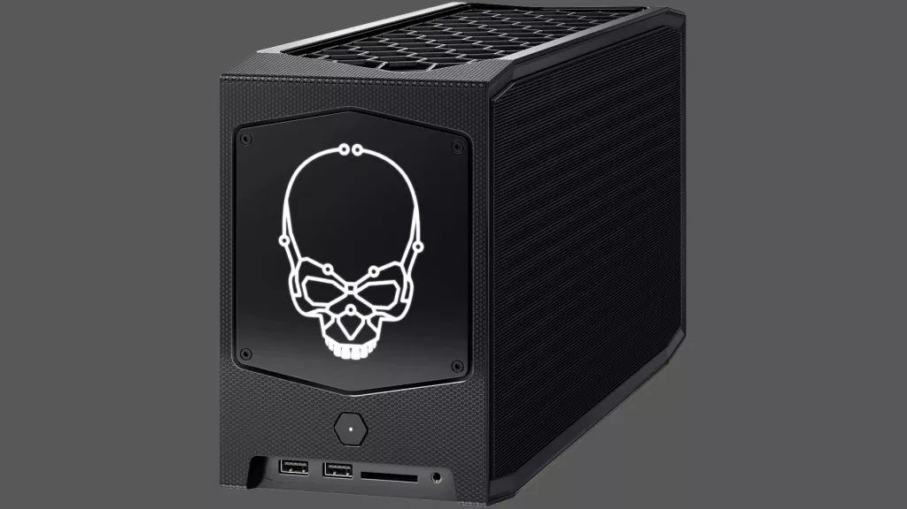

US Edition


Search
Tom's Hardware is supported by its audience. When you purchase through links on our site, we may earn an affiliate commission.
Learn More
EVGA X570 Dark Review: A New AM4 Option
The X570 Dark brings EVGA to the AMD fold, with an overclocking-focused flagship
Core i9-12900kK Destroys Rysen 9 5950X by 38% in Ashes of the Singularity
Updated Windows 11 PC Health App Details Why You Can't Update to Windows 11
NEWS STREAM

AMD's Latest Radeon Drive is 13% Faster in Diablo II: Resurrected

Intel's Beast Canyon NUC Hits Retail Starting at $1,770
Researchers Create New CasFET Design for Next-Generation Transistors
AMD Developer Discusses New Linux CPPC Drivers For Ryzen, Steam Deck
Get Over $100 off This Mechanical Gaming Keyboard From EVGA
Nvidia Patents Face-to-Face 3D Stacked Dies for its Future GPUs
Raspberry Pi 4 Borg Cube Case is Ready to Assimilate You
Microsoft Removes Some of Windows 11's Cruft With App 'Stubs,' Optional Drivers